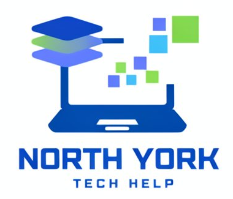

Ideogram 4.0 · Reference images · A real-world field test
One logo in.
A whole campaign out.
Look like you have a design team.
Even when it’s just you.
Upload your logo once as a reference image. Ideogram carries it into a Pinterest pin, a Story, a Facebook cover and six more formats, so a one-person business can ship a campaign that looks art-directed.
A real campaign for my real business. Every prompt on this page is copied straight from Ideogram’s export.

Output ↓ 9 channel-ready renders
01 · The campaign
Nine formats. One brand that holds.
North York Tech Help is my business. I give seniors in Toronto patient, at-home tech help. I needed a whole season of content: tips, offers, a scam warning, covers for every profile. Here’s the full set at true aspect ratios. Tap any proof to see its prompt.
02 · How I made this
One brief, an agent, and a lot of looking.
Five steps from a logo file to this page. I worked alone and let agents do the repetitive parts.
-
01
Brief → prompt agent
I gave Hermes Agent running DeepSeek V4.1 Flash one brief: the brand palette as hex codes, a description of the logo, the audience (seniors and their adult kids), and a list of channels with their aspect ratios and crop rules. It wrote a separate prompt for each format, and every prompt follows the same seven-part structure. Here’s one, taken apart:
Instagram feed post, 4:5 portrait, bright lifestyle photograph with headline text. Reproduce the North York Tech Help logo from the reference image exactly — the navy laptop with stacked layers and rising pixel squares above the wordmark “NORTH YORK” and “TECH HELP” — with the same shapes, colours and lettering, not redrawn or restyled. A smiling woman in her early 70s sits at a white kitchen table in a sunny Toronto home holding an iPad angled toward the camera; the iPad screen shows the logo large and crisp on a white background. A friendly man in his 30s in a royal blue (#1D43C0) sweater sits beside her, gently pointing at the screen; both are relaxed and laughing. The subjects fill the lower two-thirds of the frame. The top third is a softly out-of-focus white wall holding the headline in bold, squared geometric sans-serif letters with slightly rounded corners, in royal blue (#1D43C0): “Tech help without bothering your family”. A few small squares in periwinkle (#586FF6), sky blue (#62B7F6) and lime green (#94D769) drift up from the iPad toward the headline, continuing the logo’s pixel motif. Bright, clean morning daylight from the left. Shot on a 50mm lens at eye level, shallow depth of field, authentic and unposed.
-
02
Ideogram 4.0 with the logo as a reference
I attached the logo as a reference image and set Magic Prompt to Auto. Ideogram rewrites each prompt into an edit plan, and that plan includes an explicit list of what must not change. For the image above, it wrote:
Ideogram’s plan · content that stays the same “The typography, exact wording, and navy blue color of ‘NORTH YORK’ and ‘TECH HELP’ from image 1.”
I drafted eight assets on Turbo and rendered the 4:5 feed image on Quality.
-
03
Batch variations in ComfyUI
I ran batch variations through a ComfyUI graph so I could compare options side by side before I chose a final. A taste call goes faster when you’re looking at a grid of options than when you reroll one image at a time.
-
04
QA, and notes for the product team
Being a power user means writing down what broke. Three notes from this run:
- Hex codes became text. In the flat-lay, the circled calendar dates came back with “58FF6” written in them. The model printed my colour code. My fix: put colours in the colour-palette control (I left it empty) and keep hex out of scene descriptions.
- Crop-safe zones half-worked. On the Facebook cover, faces stayed out of the profile-photo corner as asked. But the headline starts 8% from the left edge, outside the centre 70% that survives a mobile crop. Feature idea: safe-zone overlays for channel presets such as FB cover, Story and YouTube banner.
- The logo holds best on flat, front-facing surfaces. It came through cleanly on screens, cards, a sticker and a mug. On the lawn sign, the icon lifted off and only the wordmark stayed on the sign.
-
05
Ship the page
I built this page in Claude Code as hand-written HTML, CSS and a little JavaScript, with no framework, and it’s hosted on GitHub Pages. A short Python script reads Ideogram’s CSV export, resizes every render, and extracts the prompts you see when you open a proof.
03 · For teams
The same idea, pitched to a brand team.
One slide for an enterprise buyer, with my speaker notes underneath.
04 · Who made this
Hi, I’m Anthony. I’d like to do this at Ideogram.
I run North York Tech Help, a patient, at-home tech-help service for seniors in Toronto. I made this campaign for my own business. Then I built this page to show how I’d work as a Design Engineer on Brand & Marketing: idea, assets, page and pitch, all done solo, with agents handling the repetitive parts.
This is an unofficial concept. It isn’t affiliated with, endorsed by or made by Ideogram, and it uses no Ideogram logos or brand assets.
- Phone(647) 302-6396
- Emailac@anthonycarnevale.ca
- LinkedInin/anthonymcarnevale
- BusinessNorth York Tech Help
- SourceThis page on GitHub